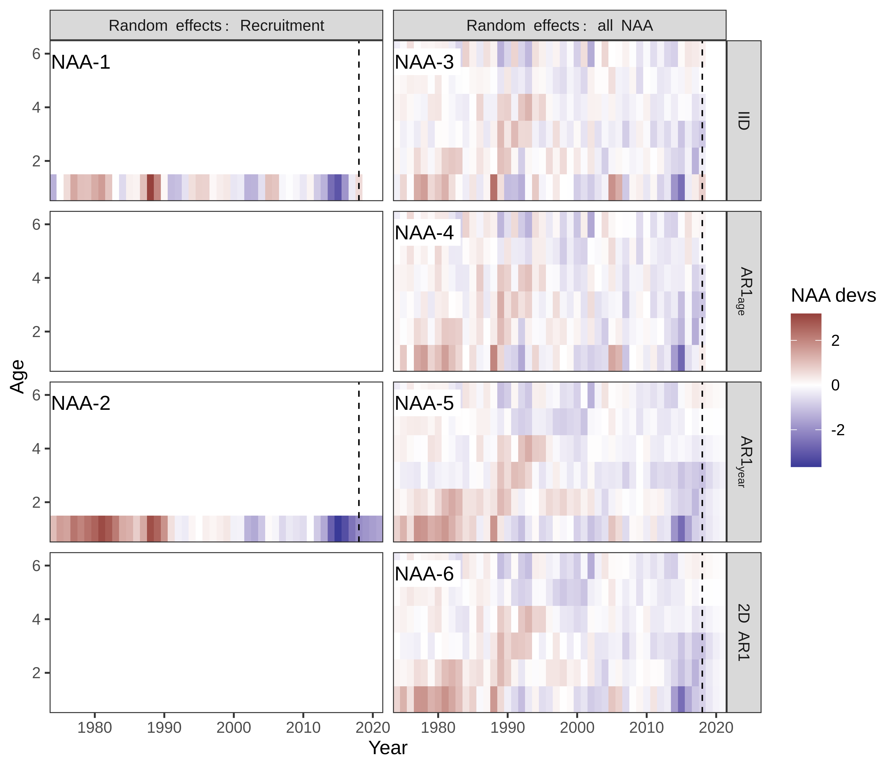
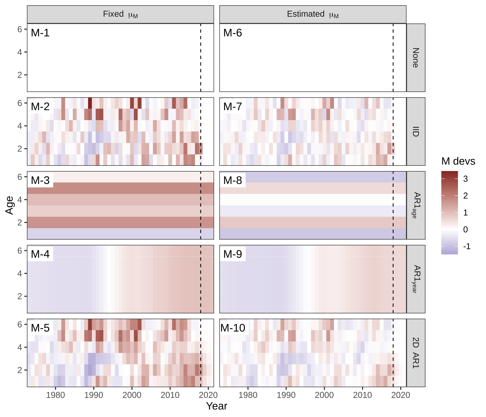
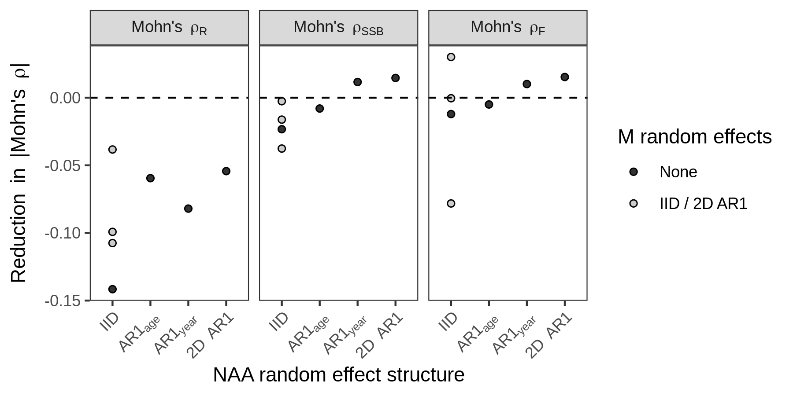
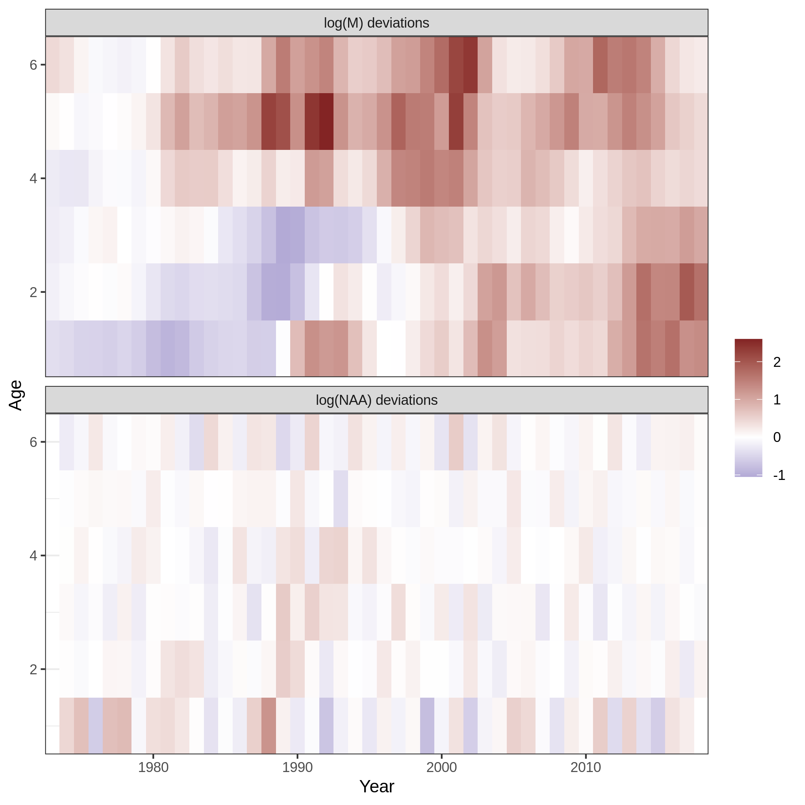
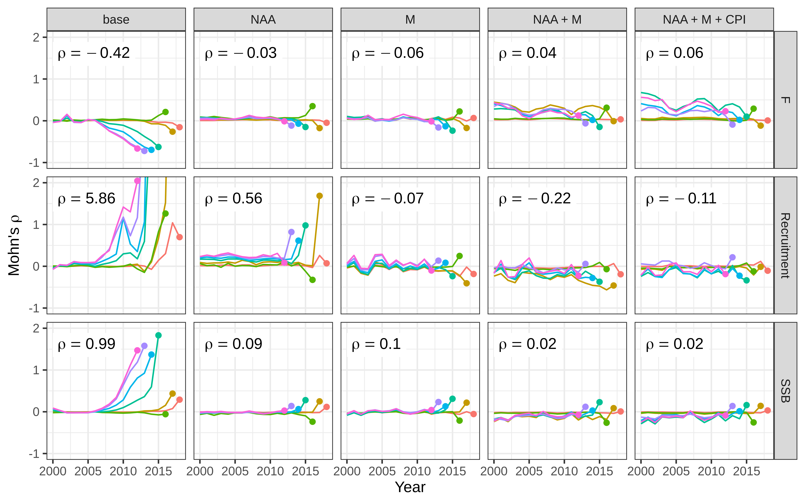
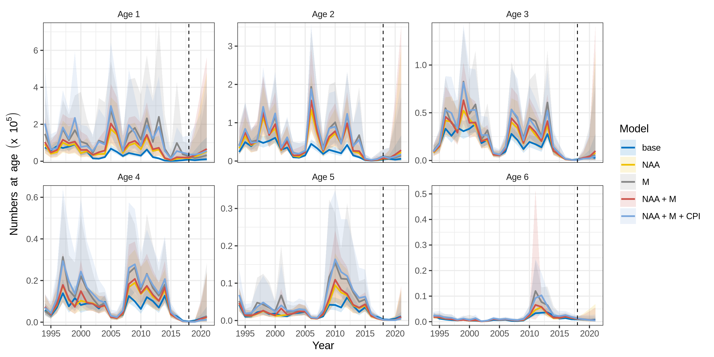
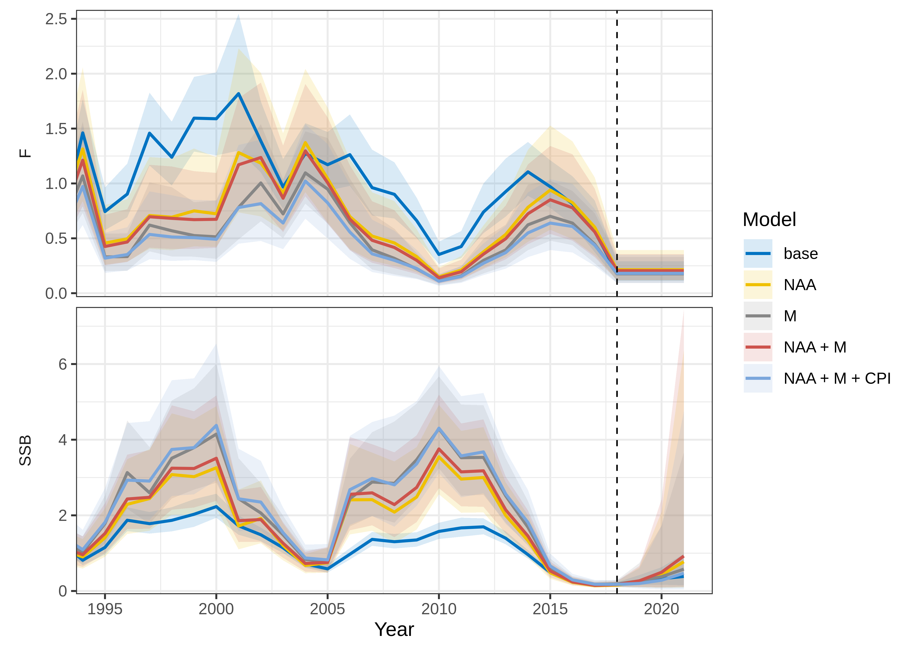

2D AR1 random effects on NAA vs. M (+CPI)
Methods changes from Haikun’s draft
- Updated population data through 2018. Use 2019 assessment with a couple modifications:
- remove larval survey (indices 4 and 5)
- use logistic selectivity except for blocks 1, 3, and 9 (age-specific with sel for older ages fixed at 1, as in assessment, facilitates convergence)
- age compositions: logistic normal pool obs (wham option 5)
- Updated CPI from Chris Melrose (1972-2018)
- Added analysis comparing putting 2D AR1 devs on NAA vs. M (motivated by Aldrin et al. 2020)
Results summary (i.e. points to make in paper)
Base model has large retros (\(\rho_R > 5\), \(\rho_{SSB} = 1\), \(\rho_F = -0.4\)). Recruitment has been very poor in the period since Haikun’s data ended (2012-2018), so models that do not allow temporal changes in R greatly overestimate it. Looking back at Haikun’s figures, the outlook for the stock was much rosier with data ending in 2011. It has tanked since then.
- 2D AR1 structure on random effects is useful (lower AIC and \(\rho\)).
- NAA only. Adding random effect deviations on NAA improves AIC and \(\rho\). 2D AR1 best. \(\rho_R = 0.56\), \(\rho_{SSB} = 0.09\), \(\rho_F = -0.03\).
- M only. NAA devs are kind of like M devs (not really… but that’s advocated by Aldrin et al. 2020). Adding devs on M instead of NAA also improves AIC and \(\rho\). 2D AR1 best again. Not obvious whether to estimate (higher) mean M or not: lower AIC but higher \(\rho\). Just estimating \(\mu_M\) without any random effects reduces AIC and \(\rho\) a lot.
- NAA + M. Adding devs on both NAA and M further improves AIC and \(\rho\). Gets to \(\rho_R = -0.21\), \(\rho_{SSB} = 0.03\), \(\rho_F = 0.05\). Model with 2D AR1 on both doesn’t converge, need to have IID devs on either NAA, M, or both.
- Environmental effect on recruitment further improves AIC and \(\rho\).
- NAA + CPI. Reduces \(\rho_R\) by about 0.06-0.1 compared to NAA only. Little change in \(\rho_{SSB}\) or \(\rho_F\).
- NAA + M + CPI. Consistent improvements as from adding M devs and CPI in isolation. Best model: NAA (IID) + M (2D AR1) + CPI (AR1). \(\rho_R = -0.11\), \(\rho_{SSB} = 0.02\), \(\rho_F = 0.06\).
- (minor) Bias correction of lognormal observations (aggregated catch and indices) slightly (but consistently) improves -logL and \(\rho\).
Tables
Converged = converged with positive definite Hessian. Model in each table with lowest retro (not AIC) is highlighted in grey and plotted in the figures.
Table 1. NAA only (models where only NAA are random effects)
Model m1, NAA_sigma = rec + NAA_cor = iid, estimates recruitment as independent random effects with \(\sigma_R\). This is closest to a SCAA model and referred to as the “base” model in figures. NAA_sigma = rec + NAA_cor = ar1_y estimates recruitment as correlated random effects (AR1 by year). NAA_sigma = rec+1 is the ‘full state-space’ model with all numbers-at-age as random effects, one \(\sigma_R\) for age-1 and one \(\sigma_a\) for all other ages. Models m3-m6 are the four in Haikun’s draft.
| Model | \(\sigma_R\) | \(\sigma_a\) | \(\rho_{year}\) | \(\rho_{age}\) | -log\((\mathcal{L})\) | AIC | \(\Delta AIC\) | Mohn’s \(\rho_{R}\) | Mohn’s \(\rho_{SSB}\) | Mohn’s \(\rho_{F}\) |
|---|---|---|---|---|---|---|---|---|---|---|
| NAA-1 | 1.18 (0.13) | — | — | — | -934.024 | -1712.0 | 221.6 | 5.8569 | 0.9883 | -0.4163 |
| NAA-2 | 0.66 (0.08) | — | 0.92 (0.05) | — | -957.164 | -1756.3 | 177.3 | 4.5580 | 0.9014 | -0.3799 |
| NAA-3 | 1.01 (0.12) | 0.58 (0.05) | — | — | -1027.684 | -1897.4 | 36.2 | 0.9733 | 0.2688 | -0.1699 |
| NAA-4 | 0.86 (0.12) | 0.53 (0.05) | — | 0.46 (0.10) | -1036.859 | -1913.7 | 19.9 | 0.5549 | 0.1213 | -0.0570 |
| NAA-5 | 0.76 (0.11) | 0.48 (0.05) | 0.60 (0.09) | — | -1044.252 | -1928.5 | 5.1 | 0.7288 | 0.1411 | -0.0762 |
| NAA-6 | 0.72 (0.10) | 0.47 (0.05) | 0.52 (0.10) | 0.34 (0.12) | -1047.803 | -1933.6 | 0.0 | 0.5619 | 0.0912 | -0.0314 |
Table 2. M only (models where only M is a random effect)
NAA as in m1 above (base model \(\approx\) SCAA, NOT “full state-space”). Just estimating \(\mu_M\), without any random effects on NAA or M, reduces AIC and \(\rho\) a lot (compare m1 to m6).
| Model | \(\mu_M\) | \(\sigma_M\) | \(\rho_{year}\) | \(\rho_{age}\) | -log\((\mathcal{L})\) | AIC | \(\Delta AIC\) | Mohn’s \(\rho_{R}\) | Mohn’s \(\rho_{SSB}\) | Mohn’s \(\rho_{F}\) |
|---|---|---|---|---|---|---|---|---|---|---|
| M-1 | — | — | — | — | -934.024 | -1712.0 | 227.5 | 5.8569 | 0.9883 | -0.4163 |
| M-2 | — | 1.18 (0.09) | — | — | -1037.981 | -1918.0 | 21.5 | 0.1171 | 0.1977 | -0.1257 |
| M-3 | — | 1.15 (0.43) | — | 0.25 (0.49) | -979.398 | -1798.8 | 140.7 | 2.0562 | 0.0979 | -0.0820 |
| M-4 | — | 0.13 (0.06) | 0.98 (0.02) | — | -988.290 | -1816.6 | 122.9 | 1.1929 | -0.1171 | 0.3044 |
| M-5 | — | 0.89 (0.12) | 0.47 (0.21) | 0.39 (0.14) | -1042.965 | -1923.9 | 15.6 | -0.0662 | 0.0959 | -0.0611 |
| M-6 | 0.79 (0.04) | — | — | — | -976.715 | -1795.4 | 144.1 | 2.3550 | 0.1465 | -0.0936 |
| M-7 | 0.70 (0.12) | 0.71 (0.10) | — | — | -1045.295 | -1930.6 | 8.9 | -0.1302 | -0.0336 | 0.0867 |
| M-8 | 0.81 (0.11) | 0.42 (0.16) | — | -0.86 (0.19) | -983.717 | -1805.4 | 134.1 | 1.9773 | 0.1204 | -0.0741 |
| M-9 | 0.36 (0.22) | 0.12 (0.07) | 0.98 (0.03) | — | -983.959 | -1805.9 | 133.6 | 1.5533 | -0.1007 | 0.2641 |
| M-10 | 0.83 (0.16) | 0.56 (0.08) | 0.37 (0.14) | 0.30 (0.16) | -1051.753 | -1939.5 | 0.0 | -0.3085 | -0.1697 | 0.2692 |
Table 3. NAA + M.
| Model | Random effects NAA | Random effects M | Estimate \(\mu_{M}\) | -log\((\mathcal{L})\) | AIC | \(\Delta AIC\) | Mohn’s \(\rho_{R}\) | Mohn’s \(\rho_{SSB}\) | Mohn’s \(\rho_{F}\) |
|---|---|---|---|---|---|---|---|---|---|
| NAA-M-1 | IID | IID | No | -1051.090 | -1942.2 | 17.3 | 0.2028 | 0.1685 | -0.0942 |
| NAA-M-2 | IID | 2D AR1 | No | -1048.691 | -1933.4 | 26.1 | -0.2201 | 0.0197 | 0.0392 |
| NAA-M-3 | IID | IID | Yes | ||||||
| NAA-M-4 | IID | 2D AR1 | Yes | -1054.627 | -1943.3 | 16.2 | -0.5172 | -0.278 | 0.5438 |
| NAA-M-5 | 2D AR1 | IID | No | -1061.727 | -1959.5 | 0.0 | 0.5177 | 0.1024 | -0.0377 |
| NAA-M-6 | 2D AR1 | 2D AR1 | No | ||||||
| NAA-M-7 | 2D AR1 | IID | Yes | ||||||
| NAA-M-8 | 2D AR1 | 2D AR1 | Yes |
Table 4. NAA + M + CPI.
| Model | Random effects on NAA | Random effects on M | Estimate \(\mu_{M}\) | NLL | AIC | \(\Delta AIC\) | \(\rho_{R}\) | \(\rho_{SSB}\) | \(\rho_{F}\) |
|---|---|---|---|---|---|---|---|---|---|
| NAA-M-CPI-1 | IID | IID | No | -996.345 | -1824.7 | 3.7 | 0.1645 | 0.1659 | -0.0938 |
| NAA-M-CPI-2 | IID | 2D AR1 | No | -994.979 | -1818.0 | 10.4 | -0.1107 | 0.0204 | 0.0630 |
| NAA-M-CPI-3 | IID | 2D AR1 | Yes | -1001.182 | -1828.4 | 0.0 | -0.4173 | -0.2457 | 0.4749 |
Figures
Fig 1. NAA devs (in models where only NAA are random effects)

Fig 2. M devs (in models where only M is random effect)

Fig 3. Adding CPI-Recruitment effect reduces \(\rho_R\) and AIC. \(\rho_{SSB}\) and \(\rho_F\) unchanged.
Perhaps too much detail, could make one boxplot per rho instead. Supplement since not focus of paper?

Fig 4. NAA and M devs in final model (NAA + M + CPI random effects).
Only showing NAA + M + CPI model with lowest rho (< 0.1 for all three), even though it has higher AIC. Could show all 3 in a multipanel.

Fig 5. Retros for SSB and F (base, NAA, M, NAA + M, NAA + M + CPI)

Fig 6. NAA 6-panel (base, NAA, M, NAA + M, NAA + M + CPI)
Open to suggestions on how and what to show:
- Which models?
- Time period? Currently zoomed in on last 25 years since population is at much lower levels.
- Using last F (2018) in 3-year projections. Haikun had F = 0 in projections.

Fig 7. SSB and F (base, NAA, M, NAA + M, NAA + M + CPI)
Point of Figs. 6-7 is to show the impact of model choice on stock status. Could show a Kobe plot instead (or addition).
